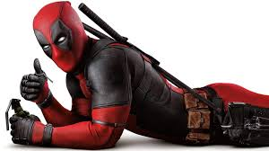

INTRODUCCION

Wade Winston Wilson, más conocido como Deadpool,5 (también conocido en español como Masacre en los cómics de Forum y Panini) es un personaje ficticio, mercenario, supervillano67 y antihéroe,8 que aparece en los cómics publicados por Marvel Comics. Creado por el artista Rob Liefeld y el escritor Fabian Nicieza, Deadpool apareció por primera vez en New Mutants (vol. 1) #98 (1991).

TRAMA
Como un mercenario mentalmente inestable y desfigurado, Deadpool apareció originalmente como un villano en el cómic New Mutants, y más tarde en ediciones de X-Force. Desde entonces, el personaje ha protagonizado varias series en curso, y ha compartido títulos con otros personajes, como Cable. Conocido como el "Mercenario Bocón" ("Merc with a Mouth" en inglés; "Mercenario Bocazas" en España), es famoso por su naturaleza comunicativa y por su tendencia a romper la cuarta pared, un recurso utilizado por los escritores para un efecto humorístico. Deadpool se puede clasificar como un antihéroe del tipo mercenario: «es el mejor ejemplo de antihéroe mercenario de todo el elenco de personajes de Marvel. Es discutible si Deadpool es el más popular de los antihéroes de Marvel, pero lo que nadie discute es que es el más estrambótico, bocazas y políticamente incorrecto»

PELICULA
En febrero de 2016, se estrenó una adaptación al cine de la mano de Fox.10 Tim Miller fue el encargado de dirigirla, mientras que Ryan Reynolds dio vida al personaje, apareciendo en las películas: X-Men Origins: Wolverine (2009), Deadpool (2016), y su secuela Deadpool 2 (2018).111213 Reynolds atribuye a Cable y Deadpool# 2 a lo que lo enganchó con el personaje y lo inspiró a llevarlo a las películas.14 Él continua interpretando al personaje en Deadpool & Wolverine (2024) del Universo cinematográfico de Marvel.